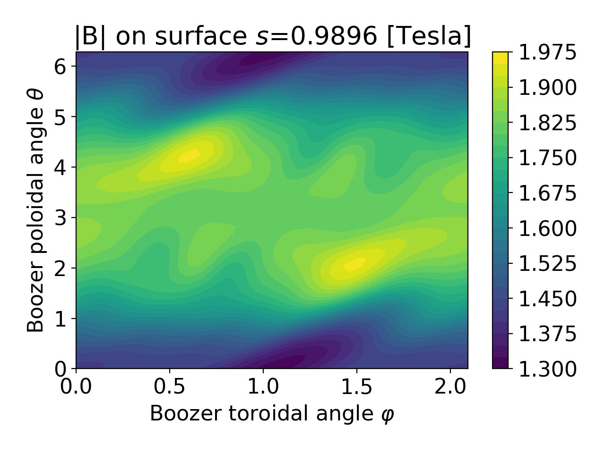

Plotting
The booz_xform python module includes several routines for plotting.
These functions take a Booz_xform instance as an argument.
This object can be one which was used to drive the coordinate transformation.
Or, this Booz_xform instance could be one in which results from an earlier
transformation were loaded using the read_boozmn() function.
The plotting routine require the python matplotlib package. This package must be installed
manually since it is not required for the core functionality of
booz_xform and so is not installed by pip.
All plotting routines use matplotlib’s current axis. When using these
routines in a script, you typically need to call plt.show() at the
end to actually display the figure.
A gallery of plots that can be generated
can be found in plots_demo notebook in the examples directory.
The full API of the available plotting routines follow.
- modeplot(b, nmodes=10, ymin=None, sqrts=False, log=True, B0=True, legend_args={'loc': 'best'}, **kwargs)
Plot the radial variation of the Fourier modes of \(|B|\) in Boozer coordinates. The plot includes only the largest few modes, based on their magnitude at the outermost surface for which data are available.
- Parameters:
b (Booz_xform, str) – The Booz_xform instance to plot, or a filename of a boozmn_*.nc file.
nmodes (int) – How many modes to include
ymin (float) – Lower limit for the y-axis. Only used if
log==True.sqrts (bool) – If true, the x axis will be sqrt(toroidal flux) instead of toroidal flux.
log (bool) – Whether to use a logarithmic y axis.
B0 (bool) – Whether to include the m=n=0 mode in the figure.
legend_args (dict) – Any arguments to pass to
plt.legend(). Useful for setting the legend font size and location.kwargs – Any additional key-value pairs to pass to matplotlib’s
plotcommand.
This function can generate figures like this:
{kind=link}
{kind=link}
- surfplot(b, js=0, fill=True, ntheta=50, nphi=90, ncontours=25, **kwargs)
Plot \(|B|\) on a surface vs the Boozer poloidal and toroidal angles.
- Parameters:
b (Booz_xform, str) – The Booz_xform instance to plot, or a filename of a boozmn_*.nc file.
js (int) – The index among the output surfaces to plot.
fill (bool) – Whether the contours are filled, i.e. whether to use plt.contourf vs plt.contour.
ntheta (int) – Number of grid points in the poloidal angle.
nphi (int) – Number of grid points in the toroidal angle.
ncontours (int) – Number of contours to show.
kwargs – Any additional key-value pairs to pass to matplotlib’s
contourforcontourcommand.
This function can generate figures like this:

{kind=link}
{kind=link}
- symplot(b, max_m=20, max_n=20, ymin=None, sqrts=False, log=True, B0=True, helical_detail=False, legend_args={'loc': 'best'}, **kwargs)
Plot the radial variation of all the Fourier modes of \(|B|\) in Boozer coordinates. Color is used to group modes with \(m=0\) and/or \(n=0\).
- Parameters:
b (Booz_xform, str) – The Booz_xform instance to plot, or a filename of a boozmn_*.nc file.
max_m (int) – Maximum poloidal mode number to include in the plot.
max_n (int) – Maximum toroidal mode number (divided by nfp) to include in the plot.
ymin (float) – Lower limit for the y-axis. Only used if
log==True.sqrts (bool) – If true, the x axis will be sqrt(toroidal flux) instead of toroidal flux.
log (bool) – Whether to use a logarithmic y axis.
B0 (bool) – Whether to include the m=n=0 mode in the figure.
helical_detail (bool) – Whether to show modes with
n = nfp * mandn = -nfp * min a separate color.legend_args (dict) – Any arguments to pass to
plt.legend(). Useful for setting the legend font size and location.kwargs – Any additional key-value pairs to pass to matplotlib’s
plotcommand.
This function can generate figures like this:

{kind=link}